CR-04 UAT — Charmiss Operations Management v8.5.0
หน้าหลักแบบ Command Center + จัดลำดับเมนูใหม่ + รวมปัญหาที่พบ · Integrated demo · AS OF 2026-11-23 · build 8.5.0-c9 · 26 พ.ย. 2026
ผลแต่ละชุด
| ชุด | ผ่าน / ทั้งหมด |
|---|---|
| CR-04 ชุดใหม่ ที่ Desktop 1440px (ความสูงหน้าหลัก Director ≤ 1,800px) | 28 / 28 |
| CR-04 ชุดใหม่ ที่มือถือ 390px (ปุ่มเสนอบนการ์ด · Bottom sheet · ป้ายย่อ · ความสูง ≤ 3,400px) | 28 / 28 |
| CR-04 Supply Alert ไม่มีการ์ดค้างเดี่ยว ที่ 1024px | 1 / 1 |
| CR-04 ชุดที่เปลี่ยนข้อมูล · ปรับยอดฝากขายจากผลนับ (I8-c) · เลื่อนรอบแผน (I8-b) | 3 / 3 |
| all(): Anchor CR-01 · เมนูตามสิทธิ์ · NOLEAK ×3 · ธีม · OPS-GATE + ชุด CR-04 (รันที่ความกว้างหน้าต่าง 1156px) | 56 / 56 |
| CR-03 3D · รอบ S&OP (ทดสอบย้อนหลัง) | 20 / 20 |
| CR-03 3C · Early warning · FVA (ทดสอบย้อนหลัง) | 15 / 15 |
| CR-03 3B · Run Rate OOS · ABC-XYZ · Safety Stock (ทดสอบย้อนหลัง) | 14 / 14 |
| CR-03 3A · Sales Out intake · เบิกออก (ทดสอบย้อนหลัง) | 20 / 20 |
| CR-01 Phase D · F1–F4 / F8 (Desktop) | 16 / 16 |
| CR-01 Phase D · F1–F4 / F8 (มือถือ 390px) | 16 / 16 |
| มือถือ 390px ไม่ล้นแนวนอน (11 บัญชี · ทุกหน้า) | 11 / 11 |
| CR-01 Phase B · Data Adapter (Flow) | 12 / 12 |
| CR-01 Phase C · B1–B5 / F7 + NOLEAK ×3 หลังมีข้อเสนอ | 20 / 20 |
Anchor (AS OF 23 พ.ย. 2026 · Weekly · 3M · ไม่กรอง)
| ตัวเลข | วิธีเดิม (= CR-01) | วิธีใหม่ CR-03 (ค่าเริ่มต้น) | แนวโน้ม (Trend) | อัตโนมัติ |
|---|---|---|---|---|
| มูลค่า Stock | ฿50,091,183 | ฿50,091,183 | ฿50,091,183 | ฿50,091,183 |
| DOC | 73 วัน | 70 วัน | 68 วัน | 71 วัน |
| สถานะ เสี่ยงขาด / สั่งผลิต / ค้าง / ปกติ / NPD (+ หมดอายุ) | 7 / 2 / 9 / 98 / 4 (+7) | 6 / 4 / 7 / 99 / 4 (+7) | 6 / 7 / 6 / 97 / 4 (+7) | 6 / 6 / 7 / 97 / 4 (+7) |
| At-risk 3M | ฿547,597 (4,489 ชิ้น) | ฿726,866 (7,265 ชิ้น) | ฿631,836 (5,331 ชิ้น) | ฿634,615 (5,386 ชิ้น) |
| Quota Fit | 92% (107/116) | 95% (110/116) | 94% (109/116) | 98% (114/116) |
| ยอดขายที่เสียโอกาส (ของขาด) 4W | — | ฿2,020,669 | ฿2,151,663 | ฿1,608,488 |
| Safety Stock รวม · มูลค่า Suggested Qty | 186,227 ชิ้น · ฿24,964,590 | 167,765 ชิ้น · ฿42,971,040 | 170,705 ชิ้น · ฿44,843,320 | 164,842 ชิ้น · ฿38,938,860 |
| ยอดขายเฉลี่ยรวม (ชิ้น / สัปดาห์) | — | 63,742 | 65,600 | 62,377 |
CR-04 ไม่เปลี่ยน SupUAT.anchors() และ anchors('new') · Trend / อัตโนมัติ เป็นตัวเลือก (D12) · อัตโนมัติเลือก (120 SKU): ล่าสุด 4 สัปดาห์ 45 · เฉลี่ย 3 เดือน 31 · แนวโน้ม 27 · ผสม 50/30/20 17 · ขาลงต่อเนื่อง 1 SKU (→ Action 1 รายการ)
CR-04 Decisions
| # | ตัดสินใจ |
|---|---|
| D1–D14 | ค่าเริ่มต้นตามเอกสาร CR-04 ข้อ 8 ทุกข้อ |
| DC-1 | ERP เห็นการ์ด "IV − CN วันนี้" ตาม R2-3 (เป็นยอดเอกสาร ERP) แต่ไม่เห็นการ์ดยอดขาย / แผง E-commerce / "ดูเพิ่ม" |
| DC-2 | "รอบประชุม S&OP" ใน 14 วันข้างหน้า = วันปิดรับแก้แผน (วันที่ 20) — ปิดรอบในหน้ารอบ S&OP วันนั้น ไม่มีค่าตั้งวันประชุมแยก |
| DC-3 | PO / CN ใน 14 วันข้างหน้า นับจาก AS OF ของ Supply (ปฏิทินเดียวกับหน้าของเข้า) · วันปิดรับแก้แผนนับจากวันนี้ |
| DC-4 | หน้ารายงานเริ่มที่ "วันนี้" (ปิดยอด IV − CN รายวันเหมือนเดิม) · หน้ารายการอื่นเริ่มที่ "รอบแผนนี้" (D8) · งานค้างเริ่ม "ทุกวันที่" |
| DC-5 | แถบสายงาน Order → Cash นับทุกออเดอร์ในสิทธิ์ และกดแล้วเปิดหน้าคำสั่งซื้อที่ "ทุกวันที่" ให้ตัวเลขตรงกับแท็บ |
| DC-6 | ลูกค้าทั้งหมด = ลูกค้าที่มีออเดอร์ในช่วง (รวมที่ยกเลิก) · ยอดซื้อรวม / AOV ไม่รวมยกเลิก และหัก CN ที่ออกแล้ว |
| DC-7 | Trend: Run Rate = ค่าเฉลี่ย 13 สัปดาห์ข้างหน้าของเส้นแนวโน้ม · Projection / Stockout Date ใช้ค่ารายสัปดาห์ (ดู Open issue OI-1) |
| DC-8 | อัตโนมัติเลือกจาก 4 วิธี (4 สัปดาห์ · 3 เดือน · ผสม · แนวโน้ม) ตามสวิตช์ "ไม่นับช่วงของขาด" ที่ใช้อยู่ |
| DC-9 | ป้าย "ขาลงต่อเนื่อง" คิดจากยอด Sales Out รวมทุกคู่ค้าของ SKU → Action ประเภทใหม่ (เจ้าของ Planner) |
| DC-10 | ผู้ขอปรับยอดฝากขาย: Planner / Director / Manager MT · ผู้อนุมัติ: Director / Manager MT (D6) ที่ไม่ใช่ผู้ขอ |
| DC-11 | Calc.LEGACY_METHODS เพิ่ม countAdjustOn: false — "ใช้วิธีเดิมทั้งหมด" และ anchors() ได้ตัวเลข CR-01 แม้มีรายการปรับ |
| DC-12 | เลื่อนรอบแผน: Quota ของเดือนใหม่ = แผน Supply (quota.csv) ทุกคู่ที่ยังไม่มี Quota อนุมัติใน Ops · Quota ของบัญชี Supply ที่ไม่มีเดือนได้เดือนเดิม · ช่องทาง Ops-only (Direct / Social) คงเดิม · เอกสารของรอบเดิมไม่นับเป็น "ใช้ไป" |
| DC-13 | ช่อง AS OF ของ Supply และช่องวันที่ในฟอร์ม Ops ใช้ปฏิทินเดียวกัน (โหมดวันเดียว) แสดง DD MMM YYYY · ค่าที่ส่งยังเป็น ISO |
| DC-14 | ป้ายรหัส ABC-XYZ เก็บใน Tooltip / data-grp / Export · ตัวกรองกลุ่มมีทั้ง A/B/C, X/Y/Z และ 9 ช่อง |
| DC-15 | ชุดทดสอบเดิมที่ปรับเฉพาะค่าคาดหวังตาม CR-04: EXPECT (ลำดับเมนู R1) · CR3-ACTION-AUTO (+ Action ขาลงต่อเนื่อง R9) · CR3-OOS-VIEW (ชื่อคอลัมน์ R10) · CR3-ABC-FILTER (อ่านรหัสจาก data-grp R12) · NEW_METHODS + countAdjustOn: true |
CR-04 Open issues
| # | ส่วน | เรื่อง | หมายเหตุ |
|---|---|---|---|
| OI-1 | R9 Trend | ROP / Safety Stock / Suggested Qty ใช้ค่าเฉลี่ย 13 สัปดาห์ของเส้นแนวโน้ม (ค่าคงที่) ส่วน Projection / Stockout Date ใช้ค่ารายสัปดาห์ | ให้ ROP ใช้ค่ารายสัปดาห์ต้องแก้สูตร Safety Stock (CR-03) — เสนอทำใน CR ถัดไปเพื่อไม่ให้ Anchor เปลี่ยน |
| OI-2 | R9 Trend | ไม่นับสัปดาห์โปรโมชั่น: เตรียมฟิลด์ DB.promo แล้ว แต่ยังไม่มีแหล่งข้อมูล | ต้องมีตาราง promo (SKU × คู่ค้า × สัปดาห์) |
| OI-3 | I10 | ช่องวันที่ในฟอร์ม (หมดอายุ Lot · ETA PO · กำหนดเสร็จ) เปลี่ยนเป็นปุ่มเปิดปฏิทิน — ช่องบังคับไม่ใช้การเตือนของเบราว์เซอร์แล้ว ใช้การตรวจของฟังก์ชันบันทึกเดิม | ตรวจแล้วทุกฟอร์มยังปฏิเสธค่าว่างตามเดิม |
| PROD-01 | ก่อนใช้งานจริง | ตัวกรอง (sessionStorage) · คำขอปรับยอดฝากขาย (localStorage) · รอบแผน (db.planPeriod) อยู่ในเบราว์เซอร์ | ต้องย้ายไประบบกลางเมื่อเชื่อมระบบจริง |
CR-04 ชุดใหม่ ที่ Desktop 1440px (ความสูงหน้าหลัก Director ≤ 1,800px)
รันเมื่อ 2026-11-25 23:45:37 · Viewport 1440px
| Case | ผล | รายละเอียด |
|---|---|---|
| CR4-LANDING | PASS | {"land":[],"deepSup":"supQuota","deepOps":"customers:7d","again":"overview"} |
| CR4-MENU-ORDER | PASS | {"bad":[],"curOpen":true,"ids":[]} |
| CR4-GATE | PASS | {"fail":[]} |
| CR4-HOME-ROLE | PASS | {"bad":[]} |
| CR4-HOME-MATCH | PASS | {"n":14,"bad":[]} |
| CR4-FLOW-STRIP | PASS | {"fl":[],"poBox":16,"poPage":16} |
| CR4-MYWORK | PASS | {"dirProp":true,"plannerSeesOwn":false,"dirIssue":true,"whSeesOwn":false,"mtAct":true,"ttAct":false,"saMt":true,"saTt":false,"sorted":true,"opened":true} |
| CR4-NOLEAK | PASS | {"hits":[]} |
| CR4-DATASET | PASS | {"integ":true,"uat":true} |
| CR4-ALERT-GRID | PASS | {"width":1440,"ag":[{"who":"director","cols":3,"rows":[3,3],"ok":true},{"who":"mgr-mt","cols":2,"rows":[2,2],"ok":true},{"who":"warehouse","cols":1,"rows":[1],"ok":true},{"who":"planner","cols":2,"rows":[2,2],"ok":true}]} |
| CR4-HEIGHT | PASS | {"width":1440,"height":1773,"limit":1800} |
| CR4-SCOPE01 | PASS | {"phone":false,"sc":[{"v":"supReplen","n":11},{"v":"supConsign","n":11},{"v":"supQuota","n":50}],"made":1} |
| CR4-ORDER-TABS | PASS | {"n":8,"sumOk":true,"bad":[],"payTab":"pay","shipTab":"pick","erpTab":"pay","whTab":"pick"} |
| CR4-FILTER | PASS | {"bars":["orders:1","customers:1","documents:1","workQueue:1","returns:1","reports:1","audit:1"],"presetsOk":true,"chips":[2,1,0],"urlOk":true,"desc":true,"asc":true,"sheet":null,"scopeOk":true} |
| CR4-CUSTOMER-CARDS | PASS | {"c1":{"total":6,"spend":60931.15,"aov":10155.19},"spendHand":60931.15,"colSum":60931.15,"customers":6,"changed":true,"quietRows":0,"quietCard":0,"dup":["Demo MT Quota Check","Demo Beauty Co."]} |
| CR4-PLAN-PERIOD | PASS | {"chip":{"overview":true,"orders":true,"allocation":true,"reports":true,"supQuota":true,"supProposals":true,"supSop":true,"customers":false,"audit":false,"access":false},"ro":{"bar":true,"btns":true,"refuse":true,"quota":0,"preset":"2026-10"},"back":{"bar":true,"check":true,"quota":100},"FEED_MONTH":"2026-11","pp":"2026-11"} |
| CR4-DATE-FORMAT | PASS | {"bad":[],"helper":"25 พ.ย. 2026 / TH"} |
| CR4-SKU-SEARCH | PASS | {"sr":{"alias":true,"partner":true,"barcode":true,"name":true},"s360":{"h1":"SKU 360","hash":"#/supply/overview?q=JB-FD-001","inline":true},"kp":["15 มิ.ย. 2027","14 ม.ค. 2027","51,191","2,525.3"]} |
| CR4-PORTFOLIO | PASS | {"pfw":[{"k":1,"page":"1/72","hand":"1/72"},{"k":8,"page":"3/50","hand":"3/50"},{"k":20,"page":"13/86","hand":"13/86"}],"projUnit":"v"} |
| CR4-RR-UX | PASS | {"radios":6,"skip":true,"chipTxt":"คาดการณ์: ล่าสุด 4 สัปดาห์ · ไม่นับช่วงของขาด ▾","exRows":[2525.3,2354.6,2222.5,2413.5,2626.4,2626.4],"hand2":[2525.3,2354.6,2222.5,2413.5,2626.4,2626.4],"link":"L3M/sellout"} |
| CR4-TREND | PASS | {"trOk":{"dec":true,"flat":true,"neg":true,"cap":true,"short":true,"down":true},"fallback":{"sku":"CM-LP-007","short":true,"same":true},"actions":1,"declining":1} |
| CR4-AUTO | PASS | {"au":[{"sku":"CM-FD-001","ok":true,"pick":"L3M","wape":{"L4W":10.451227604512276,"L3M":7.887975771187448,"W":8.810763445799944,"TR":9.601728255401135}},{"sku":"CM-FD-003","ok":true,"pick":"L4W","wape":{"L4W":30.449029126213595,"L3M":43.36445108289769,"W":36.018530619865565,"TR":32.430399023914276}}],"share":{"L3M":31,"L4W":45,"TR":27,"W":17}} |
| CR4-LOST-LABEL | PASS | {"parts":[100277,1920392],"tot":2020669} |
| CR4-CONTROLS | PASS | {"ctl":{"supOverview":"VH","supStock":"","supExpiry":"H","supConsign":"V","supCalendar":"H","supReplen":"","supQuota":"VH","supReview":"V"},"kept":true,"info":true} |
| CR4-ABC-LABEL | PASS | {"shown":"ขายหลัก · สม่ำเสมอ","mxSum":109,"ac":109,"filt":true} |
| CR4-ANCHOR-STAY | PASS | {"old":[],"new":[]} |
| CR4-FILE-PROTOCOL | PASS | {"got":{"id":"CR3-3A","pass":false,"info":"run via http server (python -m http.server)"}} |
| CR4-CONSOLE | PASS | {"errors":[]} |
CR-04 ชุดใหม่ ที่มือถือ 390px (ปุ่มเสนอบนการ์ด · Bottom sheet · ป้ายย่อ · ความสูง ≤ 3,400px)
รันเมื่อ 2026-11-25 23:53:00 · Viewport 390px
| Case | ผล | รายละเอียด |
|---|---|---|
| CR4-LANDING | PASS | {"land":[],"deepSup":"supQuota","deepOps":"customers:7d","again":"overview"} |
| CR4-MENU-ORDER | PASS | {"bad":[],"curOpen":true,"ids":[]} |
| CR4-GATE | PASS | {"fail":[]} |
| CR4-HOME-ROLE | PASS | {"bad":[]} |
| CR4-HOME-MATCH | PASS | {"n":14,"bad":[]} |
| CR4-FLOW-STRIP | PASS | {"fl":[],"poBox":16,"poPage":16} |
| CR4-MYWORK | PASS | {"dirProp":true,"plannerSeesOwn":false,"dirIssue":true,"whSeesOwn":false,"mtAct":true,"ttAct":false,"saMt":true,"saTt":false,"sorted":true,"opened":true} |
| CR4-NOLEAK | PASS | {"hits":[]} |
| CR4-DATASET | PASS | {"integ":true,"uat":true} |
| CR4-ALERT-GRID | PASS | {"width":390,"ag":[{"who":"director","cols":1,"rows":[1,1,1,1,1],"ok":true},{"who":"mgr-mt","cols":1,"rows":[1,1,1,1],"ok":true},{"who":"warehouse","cols":1,"rows":[1],"ok":true},{"who":"planner","cols":1,"rows":[1,1,1,1],"ok":true}]} |
| CR4-HEIGHT | PASS | {"width":390,"height":3078,"limit":3400} |
| CR4-SCOPE01 | PASS | {"phone":true,"sc":[{"v":"supReplen","n":11},{"v":"supConsign","n":11},{"v":"supQuota","n":20}],"made":1} |
| CR4-ORDER-TABS | PASS | {"n":8,"sumOk":true,"bad":[],"payTab":"pay","shipTab":"pick","erpTab":"pay","whTab":"pick"} |
| CR4-FILTER | PASS | {"bars":["orders:1","customers:1","documents:1","workQueue:1","returns:1","reports:1","audit:1"],"presetsOk":true,"chips":[2,1,0],"urlOk":true,"desc":true,"asc":true,"sheet":true,"scopeOk":true} |
| CR4-CUSTOMER-CARDS | PASS | {"c1":{"total":6,"spend":60931.15,"aov":10155.19},"spendHand":60931.15,"colSum":60931.15,"customers":6,"changed":true,"quietRows":0,"quietCard":0,"dup":["Demo MT Quota Check","Demo Beauty Co."]} |
| CR4-PLAN-PERIOD | PASS | {"chip":{"overview":true,"orders":true,"allocation":true,"reports":true,"supQuota":true,"supProposals":true,"supSop":true,"customers":false,"audit":false,"access":false},"ro":{"bar":true,"btns":true,"refuse":true,"quota":0,"preset":"2026-10"},"back":{"bar":true,"check":true,"quota":100},"FEED_MONTH":"2026-11","pp":"2026-11"} |
| CR4-DATE-FORMAT | PASS | {"bad":[],"helper":"25 พ.ย. 2026 / TH"} |
| CR4-SKU-SEARCH | PASS | {"sr":{"alias":true,"partner":true,"barcode":true,"name":true},"s360":{"h1":"SKU 360","hash":"#/supply/overview?q=JB-FD-001","inline":true},"kp":["15 มิ.ย. 2027","14 ม.ค. 2027","51,191","2,525.3"]} |
| CR4-PORTFOLIO | PASS | {"pfw":[{"k":1,"page":"1/72","hand":"1/72"},{"k":8,"page":"3/50","hand":"3/50"},{"k":20,"page":"13/86","hand":"13/86"}],"projUnit":"v"} |
| CR4-RR-UX | PASS | {"radios":6,"skip":true,"chipTxt":"คาดการณ์: ล่าสุด 4 สัปดาห์ · ไม่นับช่วงของขาด ▾","exRows":[2525.3,2354.6,2222.5,2413.5,2626.4,2626.4],"hand2":[2525.3,2354.6,2222.5,2413.5,2626.4,2626.4],"link":"L3M/sellout"} |
| CR4-TREND | PASS | {"trOk":{"dec":true,"flat":true,"neg":true,"cap":true,"short":true,"down":true},"fallback":{"sku":"CM-LP-007","short":true,"same":true},"actions":1,"declining":1} |
| CR4-AUTO | PASS | {"au":[{"sku":"CM-FD-001","ok":true,"pick":"L3M","wape":{"L4W":10.451227604512276,"L3M":7.887975771187448,"W":8.810763445799944,"TR":9.601728255401135}},{"sku":"CM-FD-003","ok":true,"pick":"L4W","wape":{"L4W":30.449029126213595,"L3M":43.36445108289769,"W":36.018530619865565,"TR":32.430399023914276}}],"share":{"L3M":31,"L4W":45,"TR":27,"W":17}} |
| CR4-LOST-LABEL | PASS | {"parts":[100277,1920392],"tot":2020669} |
| CR4-CONTROLS | PASS | {"ctl":{"supOverview":"VH","supStock":"","supExpiry":"H","supConsign":"V","supCalendar":"H","supReplen":"","supQuota":"VH","supReview":"V"},"kept":true,"info":true} |
| CR4-ABC-LABEL | PASS | {"shown":"หลัก·สม่ำเสมอ","mxSum":109,"ac":109,"filt":true} |
| CR4-ANCHOR-STAY | PASS | {"old":[],"new":[]} |
| CR4-FILE-PROTOCOL | PASS | {"got":{"id":"CR3-3A","pass":false,"info":"run via http server (python -m http.server)"}} |
| CR4-CONSOLE | PASS | {"errors":[]} |
CR-04 Supply Alert ไม่มีการ์ดค้างเดี่ยว ที่ 1024px
รันเมื่อ 2026-11-25 23:53:11 · Viewport 1024px
| Case | ผล | รายละเอียด |
|---|---|---|
| CR4-ALERT-GRID (1024px) | PASS | {"width":1024,"ag":[{"who":"director","cols":3,"rows":[3,3],"ok":true},{"who":"mgr-mt","cols":4,"rows":[4],"ok":true},{"who":"warehouse","cols":1,"rows":[1],"ok":true},{"who":"planner","cols":4,"rows":[4],"ok":true}]} |
CR-04 ชุดที่เปลี่ยนข้อมูล · ปรับยอดฝากขายจากผลนับ (I8-c) · เลื่อนรอบแผน (I8-b)
รันเมื่อ 2026-11-25 23:58:43 · Viewport 1440px
| Case | ผล | รายละเอียด |
|---|---|---|
| CR4-COUNT-ADJ | PASS | {"pair":"A01·CM-CH-008","rem0":487,"rem1":433,"counted":433,"other":[137,137],"plannerApprove":"caDenied","own":"caOwn","audit":true,"sc3":true,"remOff":487,"anchors":true} |
| CR4-ROLLOVER | PASS | {"old":"2026-11","next":"2026-12","seeded":910,"approved":0,"qNew":144,"used":0,"supplyQuota":144,"chipTxt":"รอบแผน: ธ.ค. 2026 ▾","scOk":true,"sc":[],"anchors":true,"denied":"ppRollDenied"} |
| CR4-DATA-CONSOLE | PASS | {"errors":[]} |
all(): Anchor CR-01 · เมนูตามสิทธิ์ · NOLEAK ×3 · ธีม · OPS-GATE + ชุด CR-04 (รันที่ความกว้างหน้าต่าง 1156px)
รันเมื่อ 2026-11-25 23:42:40 · Viewport 1156px
| Case | ผล | รายละเอียด |
|---|---|---|
| SUP-ANCHOR | PASS | {"selfCheck":"refs:PASS outright:PASS negative:PASS reconcile:PASS lots:PASS wh_flow:PASS abc:PASS wms:PASS delivered:PASS quota_ops:PASS so_keys:PASS","diff":[],"got":{"stockValue":50091183,"whV":39518371,"consV":10572812,"units":"514864/136418/651282","doc":73,"sellThrough":17.8,"status":"7/2/9/98/4/+7","risk3M":"547597/4489","recall":"519974/11/7194","quotaFit":"92/107/116","mape":13.5,"bias":-4.2,"fill":93.1,"achMTD":94.1}} |
| SUP-MENU-director | PASS | {"menu":"Overview,Stock,Expiry,Consign,Calendar,Replen,Quota,Proposals,Sop,Review,Intake","refused":true} |
| SUP-MENU-mgr-mt | PASS | {"menu":"Overview,Stock,Expiry,Consign,Calendar,Quota,Proposals,Sop,Review,Intake","refused":true} |
| SUP-MENU-mgr-tt | PASS | {"menu":"Overview,Stock,Expiry,Calendar,Quota,Proposals,Sop,Review","refused":true} |
| SUP-MENU-mgr-ecom | PASS | {"menu":"Overview,Stock,Expiry,Calendar,Quota,Proposals,Sop,Review","refused":true} |
| SUP-MENU-sa-mt | PASS | {"menu":"","refused":true} |
| SUP-MENU-sa-tt | PASS | {"menu":"","refused":true} |
| SUP-MENU-sa-ecom | PASS | {"menu":"","refused":true} |
| SUP-MENU-admin | PASS | {"menu":"Intake,Setup","refused":true} |
| SUP-MENU-finance | PASS | {"menu":"Calendar,Review","refused":true} |
| SUP-MENU-warehouse | PASS | {"menu":"Expiry,Calendar","refused":true} |
| SUP-MENU-planner | PASS | {"menu":"Overview,Stock,Expiry,Consign,Calendar,Replen,Quota,Proposals,Sop,Review,Intake,Setup","refused":true} |
| SUP-NOLEAK-mgr-mt | PASS | {"lock":"MT","hits":[]} |
| SUP-NOLEAK-mgr-tt | PASS | {"lock":"TT","hits":[]} |
| SUP-NOLEAK-mgr-ecom | PASS | {"lock":"ECOM","hits":[]} |
| SUP-THEME-light | PASS | {"errors":[]} |
| SUP-THEME-dark | PASS | {"errors":[]} |
| OPS-GATE-director | PASS | {"denied":"","broken":[]} |
| OPS-GATE-mgr-mt | PASS | {"denied":"ecommerce,stockoverview","broken":[]} |
| OPS-GATE-mgr-tt | PASS | {"denied":"ecommerce,stockoverview","broken":[]} |
| OPS-GATE-mgr-ecom | PASS | {"denied":"stockoverview,soRequests","broken":[]} |
| OPS-GATE-sa-mt | PASS | {"denied":"ecommerce,stockoverview","broken":[]} |
| OPS-GATE-sa-tt | PASS | {"denied":"ecommerce,stockoverview","broken":[]} |
| OPS-GATE-sa-ecom | PASS | {"denied":"stockoverview,soRequests","broken":[]} |
| OPS-GATE-admin | PASS | {"denied":"","broken":[]} |
| OPS-GATE-finance | PASS | {"denied":"ecommerce,customers","broken":[]} |
| OPS-GATE-warehouse | PASS | {"denied":"ecommerce,customers,soRequests,reports","broken":[]} |
| OPS-GATE-planner | PASS | {"denied":"ecommerce,customers,stockoverview,soRequests","broken":[]} |
| CR4-LANDING | PASS | {"land":[],"deepSup":"supQuota","deepOps":"customers:7d","again":"overview"} |
| CR4-MENU-ORDER | PASS | {"bad":[],"curOpen":true,"ids":[]} |
| CR4-GATE | PASS | {"fail":[]} |
| CR4-HOME-ROLE | PASS | {"bad":[]} |
| CR4-HOME-MATCH | PASS | {"n":14,"bad":[]} |
| CR4-FLOW-STRIP | PASS | {"fl":[],"poBox":16,"poPage":16} |
| CR4-MYWORK | PASS | {"dirProp":true,"plannerSeesOwn":false,"dirIssue":true,"whSeesOwn":false,"mtAct":true,"ttAct":false,"saMt":true,"saTt":false,"sorted":true,"opened":true} |
| CR4-NOLEAK | PASS | {"hits":[]} |
| CR4-DATASET | PASS | {"integ":true,"uat":true} |
| CR4-ALERT-GRID | PASS | {"width":1156,"ag":[{"who":"director","cols":2,"rows":[2,2,2],"ok":true},{"who":"mgr-mt","cols":2,"rows":[2,2],"ok":true},{"who":"warehouse","cols":1,"rows":[1],"ok":true},{"who":"planner","cols":2,"rows":[2,2],"ok":true}]} |
| CR4-HEIGHT | PASS | {"width":1156,"height":1954,"limit":null} |
| CR4-SCOPE01 | PASS | {"phone":false,"sc":[{"v":"supReplen","n":11},{"v":"supConsign","n":11},{"v":"supQuota","n":50}],"made":1} |
| CR4-ORDER-TABS | PASS | {"n":8,"sumOk":true,"bad":[],"payTab":"pay","shipTab":"pick","erpTab":"pay","whTab":"pick"} |
| CR4-FILTER | PASS | {"bars":["orders:1","customers:1","documents:1","workQueue:1","returns:1","reports:1","audit:1"],"presetsOk":true,"chips":[2,1,0],"urlOk":true,"desc":true,"asc":true,"sheet":null,"scopeOk":true} |
| CR4-CUSTOMER-CARDS | PASS | {"c1":{"total":6,"spend":60931.15,"aov":10155.19},"spendHand":60931.15,"colSum":60931.15,"customers":6,"changed":true,"quietRows":0,"quietCard":0,"dup":["Demo MT Quota Check","Demo Beauty Co."]} |
| CR4-PLAN-PERIOD | PASS | {"chip":{"overview":true,"orders":true,"allocation":true,"reports":true,"supQuota":true,"supProposals":true,"supSop":true,"customers":false,"audit":false,"access":false},"ro":{"bar":true,"btns":true,"refuse":true,"quota":0,"preset":"2026-10"},"back":{"bar":true,"check":true,"quota":100},"FEED_MONTH":"2026-11","pp":"2026-11"} |
| CR4-DATE-FORMAT | PASS | {"bad":[],"helper":"25 พ.ย. 2026 / TH"} |
| CR4-SKU-SEARCH | PASS | {"sr":{"alias":true,"partner":true,"barcode":true,"name":true},"s360":{"h1":"SKU 360","hash":"#/supply/overview?q=JB-FD-001","inline":true},"kp":["15 มิ.ย. 2027","14 ม.ค. 2027","51,191","2,525.3"]} |
| CR4-PORTFOLIO | PASS | {"pfw":[{"k":1,"page":"1/72","hand":"1/72"},{"k":8,"page":"3/50","hand":"3/50"},{"k":20,"page":"13/86","hand":"13/86"}],"projUnit":"v"} |
| CR4-RR-UX | PASS | {"radios":6,"skip":true,"chipTxt":"คาดการณ์: ล่าสุด 4 สัปดาห์ · ไม่นับช่วงของขาด ▾","exRows":[2525.3,2354.6,2222.5,2413.5,2626.4,2626.4],"hand2":[2525.3,2354.6,2222.5,2413.5,2626.4,2626.4],"link":"L3M/sellout"} |
| CR4-TREND | PASS | {"trOk":{"dec":true,"flat":true,"neg":true,"cap":true,"short":true,"down":true},"fallback":{"sku":"CM-LP-007","short":true,"same":true},"actions":1,"declining":1} |
| CR4-AUTO | PASS | {"au":[{"sku":"CM-FD-001","ok":true,"pick":"L3M","wape":{"L4W":10.451227604512276,"L3M":7.887975771187448,"W":8.810763445799944,"TR":9.601728255401135}},{"sku":"CM-FD-003","ok":true,"pick":"L4W","wape":{"L4W":30.449029126213595,"L3M":43.36445108289769,"W":36.018530619865565,"TR":32.430399023914276}}],"share":{"L3M":31,"L4W":45,"TR":27,"W":17}} |
| CR4-LOST-LABEL | PASS | {"parts":[100277,1920392],"tot":2020669} |
| CR4-CONTROLS | PASS | {"ctl":{"supOverview":"VH","supStock":"","supExpiry":"H","supConsign":"V","supCalendar":"H","supReplen":"","supQuota":"VH","supReview":"V"},"kept":true,"info":true} |
| CR4-ABC-LABEL | PASS | {"shown":"ขายหลัก · สม่ำเสมอ","mxSum":109,"ac":109,"filt":true} |
| CR4-ANCHOR-STAY | PASS | {"old":[],"new":[]} |
| CR4-FILE-PROTOCOL | PASS | {"got":{"id":"CR3-3A","pass":false,"info":"run via http server (python -m http.server)"}} |
| CR4-CONSOLE | PASS | {"errors":[]} |
CR-03 3D · รอบ S&OP (ทดสอบย้อนหลัง)
รันเมื่อ 2026-11-25 23:33:12 · Viewport 1440px
| Case | ผล | รายละเอียด |
|---|---|---|
| CR3-3D-VERSION | PASS | {"foot":"Charmiss Operations Management · v8.5.0"} |
| CR3-LEGACY (every switch old → CR-01 anchors) | PASS | {"diff":[]} |
| CR3-ANCHOR-NEW (every switch new → README anchors) | PASS | {"diff":[]} |
| CR3-MENU-SOP | PASS | {"seen":{"director":true,"planner":true,"mgr-tt":true,"sa-mt":false,"finance":false,"warehouse":false,"admin":false}} |
| CR3-ACTION-AUTO (one per condition · no duplicate · owners A7) | PASS | {"open":122,"want":122,"again":0,"ew":"mgr-mt","stockout":"planner","expiry":["planner","mgr-mt"]} |
| CR3-ACTION-FLOW (ack → done · reason for not done · no going back · audit) | PASS | {"audit":3} |
| CR3-ACTION-NOCLOSE (condition gone → flagged, still open · confirm close) | PASS | {"open":30,"flagged":30,"after":29} |
| CR3-ACTION-MANUAL (Planner · Manager own department only) | PASS | {"tt":"sopBadAcc"} |
| CR3-ACTION-NOLEAK (Manager MT / TT see own department · cannot work others) | PASS | {"mt":107,"tt":0} |
| CR3-ACTION-B4 (home card · my overdue → the page) | PASS | {"b4":1} |
| CR3-SNAPSHOT (close · PO moved + Stockout Date > 14 days · quota change · compare on the page) | PASS | {"sku":"CM-FD-001","po":"PO2609-0003","so":75,"poCh":1} |
| CR3-SNAPSHOT-CAP (12 cycles · IndexedDB · export) | PASS | {"kept":12,"stored":12} |
| CR3-LOCK (after day 20 → warning + audit · lock day 28 → none) | PASS | {"today":26,"a":true} |
| CR3-REVIEW-MONTHLY (demand · supply · pre-S&OP gap · exec summary) | PASS | {"parts":[true,true,true,true],"tiles":6} |
| CR3-REVIEW-WEEKLY (format kept + open actions) | PASS | {} |
| CR3-GAP (month 1 by hand · options) | PASS | {"hand":{"sku":"CM-FD-003","gap":-5125,"app":-5125},"rows":13} |
| CR3-STORAGE (snapshots 12 · action log 2,000 shown) | PASS | {"text":"พื้นที่ข้อมูลในเบราว์เซอร์ localStorage — ข้อมูล Ops + ตั้งค่า (เพดานประมาณ 5 MB) ใช้ 688 KB IndexedDB — ไฟล์นำเข้า + Sales Out ที่รับ Sales Out ที่รับ: 0 ไฟล์ · 0 แถว · Snapshot แผน 12 / 12 รอบ · Act"} |
| selfCheck 1–12 | PASS | {"failed":[]} |
| CR3-DEFAULT-PAGE (sign-in → หน้าหลัก · link in a new tab → that page once) | PASS | {"land":["director:overview","mgr-mt:overview","planner:overview"],"deep":"supQuota","again":"overview"} |
| console errors (3D) | PASS | {"errors":[]} |
CR-03 3C · Early warning · FVA (ทดสอบย้อนหลัง)
รันเมื่อ 2026-11-25 23:33:56 · Viewport 1440px
| Case | ผล | รายละเอียด |
|---|---|---|
| CR3-3C-VERSION | PASS | {"foot":"Charmiss Operations Management · v8.5.0"} |
| CR3-LEGACY (every switch old → CR-01 anchors) | PASS | {"diff":[]} |
| CR3-ANCHOR-NEW (every switch new → README anchors incl. 3C) | PASS | {"diff":[],"got":{"ew":"98.8/12/18/23/0/22/20/104","fva3":"13.5/13.5/0.0","ts":"114/252/145"}} |
| CR3-EW (WOS · reorder gap · in-stock · swing · piling up by hand · one alert per pair × type) | PASS | {"pairs":{"wos":"CM-FD-010 @ Eveandboy","rgap":"CP-FD-007 @ Watsons","instock":"CP-FD-007 @ Watsons","swing":"CM-FD-004 @ Eveandboy","accum":"CM-FD-003 @ Boots"},"kpi":{"instock":98.81512741438078,"inW":6088,"allW":6161,"red":12,"yellow":18,"rgap":23,"lowIn":9,"dist":0,"swing":22,"accum":20,"alerts":104,"pairs":481}} |
| CR3-EW-DIST (no stock + no quota left + no open order → gap) | PASS | {"pair":"CP-FD-007 @ Watsons"} |
| CR3-EW-VIEW (4 cards · cumulative chart · alerts · matrix WOS / in-stock / gap) | PASS | {"cards":4,"matrix":[true,true,true]} |
| CR3-EW-CYCLE (Tops cycle 1 week → more red at Tops only · audit) | PASS | {"topsRed":[2,21]} |
| CR3-FVA (2 pairs by hand · WAPE naive / quota · FVA · tracking signal) | PASS | {"hand":[{"sku":"JB-FD-001","acc":"7-Eleven","wN":5.33,"wQ":5.33,"fva":0,"ts":-4.83,"ok":true},{"sku":"JB-CH-003","acc":"Shopee","wN":12.34,"wQ":23.33,"fva":-10.99,"ts":-6,"ok":true}]} |
| CR3-FVA-MAPE (WAPE quota 3M = MAPE on the page) | PASS | {"wapeQ":13.483212623031687,"mape":13.483212623031674,"fva":0.017674086705863346} |
| CR3-FVA-VIEW (card · by account / Sales / group · scatter · pair FVA + tracking signal) | PASS | {"segs":{"acc":true,"sales":true,"group":true}} |
| CR3-FVA-NOLEAK (Manager MT / TT · Sales owners of the own department only) | PASS | {"mt":[],"tt":[]} |
| CR3-B3-NAIVE (negative FVA 3 months → Naive + reason · switch off → CR-01 quantity) | PASS | {"pair":"JB-FD-001 @ Watsons","on":[958,"FVA ติดลบ 3 เดือนติด (FVA −2.9 pp) → เริ่มจาก Naive = Run Rate L3M × วันของเดือน"],"off":[1094,"fit 87%"]} |
| CR3-SETTINGS-3C (R5 / R6 thresholds · cycle per account · old-method button) | PASS | {} |
| selfCheck 1–12 | PASS | {"failed":[]} |
| console errors (3C) | PASS | {"errors":[]} |
CR-03 3B · Run Rate OOS · ABC-XYZ · Safety Stock (ทดสอบย้อนหลัง)
รันเมื่อ 2026-11-25 23:36:06 · Viewport 914px
| Case | ผล | รายละเอียด |
|---|---|---|
| CR3-3B-VERSION | PASS | {"foot":"Charmiss Operations Management · v8.5.0"} |
| CR3-LEGACY (every switch old → CR-01 anchors) | PASS | {"diff":[],"selfCheck":"refs:PASS outright:PASS negative:PASS reconcile:PASS lots:PASS wh_flow:PASS abc:PASS wms:PASS delivered:PASS quota_ops:PASS so_keys:PASS"} |
| CR3-ANCHOR-NEW (every switch new → README anchors) | PASS | {"diff":[],"got":{"stockValue":50091183,"whV":39518371,"consV":10572812,"units":"514864/136418/651282","doc":70,"sellThrough":17.8,"status":"6/4/7/99/4/+7","risk3M":"726866/7265","recall":"519974/11/7194","quotaFit":"95/110/116","mape":13.5,"bias":-4.2,"fill":93.1,"achMTD":94.1,"lost4":2020669,"lost13":3071760,"oosSku":21,"abc":"48/34/27/6/5","ssUnits":167765,"sugValue":42971040,"ew":"98.8/12/18/23/0/22/20/104","fva3":"13.5/13.5/0.0","ts":"114/252/145"}} |
| CR3-DEFAULTS (A2 new on · filter switch) | PASS | {"rrNew":9106,"rrOld":8708} |
| CR3-OOS (R3 · up where out of stock · same where not · lost sales) | PASS | {"same":902,"up":41,"equalFloor":10,"down":0,"example":"CM-FD-003 @ Shopee: 251.5 → 284.3/wk","lost13":3071760} |
| CR3-OOS-VIEW (stock columns · drawer · overview card · matrix) | PASS | {"sku":"TF-SK-003","card":"ยอดขายที่เสียโอกาส (ของขาด) · 4 สัปดาห์ล่าสุด\n26 ต.ค. – 22 พ"} |
| CR3-ABCXYZ (A ≤ 80 % line · B ≤ 95 % · N · E · SS 0 for E) | PASS | {"groups":"48/34/27/6/5","shares":"80.1/15.1/4.7","clearanceSku":"CM-FD-001"} |
| CR3-ABC-FILTER (Stock E · Replen B) | PASS | {"stockE":5,"replenB":34} |
| CR3-SS (3 SKUs by hand · actual vs estimated LT) | PASS | {"hand":[{"sku":"CM-FD-006","src":"sku","group":"AX","z":2.0537,"d":251.21,"sdD":77.73,"lt":74,"sdLT":1.7,"ss":1638,"app":1638,"rop":20228,"appRop":20228},{"sku":"CM-FD-001","src":"supplier","group":"AX","z":2.0537,"d":46.18,"sdD":20.35,"lt":68.8,"sdLT":19.2,"ss":1852,"app":1853,"rop":5030,"appRop":5031},{"sku":"JB-LP-006","src":"est","group":"CX","z":1.6449,"d":9.11,"sdD":5.44,"lt":105,"sdLT":0,"ss":92,"app":92,"rop":1048,"appRop":1048}],"estBadge":true} |
| CR3-SL-WHATIF (+1 pp more SS · −5 pp less · slider off with safety days) | PASS | {"ss":[122578,167765,187459]} |
| CR3-SETTINGS (threshold + audit · old-method button) | PASS | {"A70":35,"A80":48} |
| CR3-SC-12 (ABC = 100 % · every SKU grouped) | PASS | {"detail":"A 48 · 80.1% / B 34 · 15.1% / C 27 · 4.7% / N 6 / E 5"} |
| selfCheck 1–12 | PASS | {"failed":[]} |
| console errors (3B) | PASS | {"errors":[]} |
CR-03 3A · Sales Out intake · เบิกออก (ทดสอบย้อนหลัง)
รันเมื่อ 2026-11-25 23:37:12 · Viewport 1440px
| Case | ผล | รายละเอียด |
|---|---|---|
| CR3-VERSION | PASS | {"foot":"Charmiss Operations Management · v8.5.0","side":"Charmiss Ops v8.5.0 · 2026-11-25"} |
| CR3-LEGACY (old methods → CR-01 anchors) | PASS | {"diff":[],"selfCheck":"refs:PASS outright:PASS negative:PASS reconcile:PASS lots:PASS wh_flow:PASS abc:PASS wms:PASS delivered:PASS quota_ops:PASS so_keys:PASS"} |
| CR3-ANCHOR-NEW (R1 new · 3A gives the same numbers) | PASS | {"diff":[],"got":{"stockValue":50091183,"whV":39518371,"consV":10572812,"units":"514864/136418/651282","doc":73,"sellThrough":17.8,"status":"7/2/9/98/4/+7","risk3M":"547597/4489","recall":"519974/11/7194","quotaFit":"92/107/116","mape":13.5,"bias":-4.2,"fill":93.1,"achMTD":94.1}} |
| CR3-SO-INTAKE-ERRORS | PASS | {"errors":"4:ve_future 5:ve_date 6:ve_sku 7:ve_neg 8:ve_qty"} |
| CR3-SO-INTAKE-MAP | PASS | {"rows":55,"code":"71100377"} |
| CR3-SO-INTAKE (append) | PASS | {"batch":"SOI-49807470","rows":55,"snapshot":"2026-11-30","A01":"ok","A02":"pending"} |
| CR3-RR-END (only 7-Eleven moves · old method does not move) | PASS | {"moved7Eleven":54,"movedOther":0,"movedOldMethod":0} |
| CR3-STALE | PASS | {"banner":"ข้อมูล Sales Out ค้าง (เกิน 0 สัปดาห์ก่อน AS OF): Watsons ข้อมูล Sales Out ค้าง 1 สัปดาห์ · Eveandboy ข้อมูล Sales Out ค้าง 1 สัปดาห์ · Boots ข้อมูล Sales Out ค้าง 1 สัปดาห์ · Tops ข้อมูล Sales Out ค้าง 1 สัปดาห์ · Big C ข้อมูล Sales Out ค้าง 1 สัปดาห์ · Lotus's ข้อมูล Sales Out ค้าง 1 สัปดาห์ · Dealer ข้อมูล Sales Out ค้าง 1 สัปดาห์ · Wholesale ข้อมูล Sales Out ค้าง 1 สัปดาห์ · Shopee ข้อมูล Sales Out ค้าง 1 สัปดาห์ · Lazada ข้อมูล Sales Out ค้าง 1 สัปดาห์ · TikTok Shop ข้อมูล Sales Out ค้าง 1 สัปดาห์"} |
| CR3-SO-INTAKE-DUP (xlsx · skip / replace / remove) | PASS | {"dup":113,"skip":[0,113],"replace":113,"fileQty":10844,"baseQty":10855} |
| CR3-OTHER-OUT-APPROVAL | PASS | {"ownApprove":"issueSelf","reject":"issueNeedReason"} |
| CR3-OTHER-OUT (WH −100 · Sales Out and run rate unchanged) | PASS | {"sku":"TF-FD-001","wh":[19751,19651],"wms":19651} |
| CR3-OTHER-OUT-VIEW (waterfall bar + month card) | PASS | {"wfOO":100} |
| CR3-PRPLAN (switch prPlanOn · 1-month total) | PASS | {"off":17431.78571428571,"on":14474.906864183004,"off2":17431.78571428571} |
| CR3-SC-10 (WH flow incl. other_out) | PASS | {} |
| CR3-SC-11 (Sales Out keys unique) | PASS | {} |
| selfCheck 1–11 | PASS | {"failed":[]} |
| CR3-AUDIT | PASS | {} |
| CR3-MENU-INTAKE (MT view only · TT refused) | PASS | {} |
| CR3-ANCHOR-AFTER (AS OF 23 Nov · both methods) | PASS | {"diff":[]} |
| console errors (3A) | PASS | {"errors":[]} |
CR-01 Phase D · F1–F4 / F8 (Desktop)
รันเมื่อ 2026-11-25 23:46:34 · Viewport 1440px
| Case | ผล | รายละเอียด |
|---|---|---|
| SUP-F1-CARD | PASS | {"card":"Quota Achievement MTD 94.1% Sales In 180,046 / Quota 191,330 ชิ้น · สัปดาห์นี้ 48.1% ▼ 17.7 pp เทียบ MTD วันเดียวกันของเดือนก่อน","mtd":94.1,"prevMtd":111.77} |
| SUP-F1-TABLE (desktop) | PASS | {"pairs":953,"mismatch":0} |
| SUP-F1-REPORT | PASS | {} |
| SUP-F4 | PASS | {"overview":"<span class=\"delta flat\">▲ 3 วัน</span>","review":"<span class=\"delta flat\">▲ 3 วัน</span>"} |
| SUP-F2 (desktop) | PASS | {"indexAxis":"x","labels":7} |
| SUP-F3 (desktop) | PASS | {"rows":50} |
| SUP-F8-SHOW | PASS | {"counts":52,"shown":50,"summary":"นับแล้ว 52 คู่ · ตรง 36 · ตรวจ 11 · ต่างมาก 5 · ส่วนต่างรวม -423 ชิ้น (−฿30,170)"} |
| SUP-F8-DIFF (= counted − calculated; calculation untouched) | PASS | {"diff":-423,"calcAtCount":18826,"lots":18826} |
| SUP-F8-SCOPE (after AS OF / other channel → hidden) | PASS | {} |
| SUP-F8-IMPORT (schema) | PASS | {"bad":["qty:negative:-3","date:not_date:22/13/2026"]} |
| SUP-NOLEAK-sa-mt | PASS | {"refused":true,"viaUrl":true} |
| SUP-NOLEAK-sa-tt | PASS | {"refused":true,"viaUrl":true} |
| SUP-NOLEAK-sa-ecom | PASS | {"refused":true,"viaUrl":true} |
| SUP-NOTAG | PASS | {"pages":[]} |
| console errors (Phase D) | PASS | {"errors":[]} |
| SUP-ANCHOR (Phase D) | PASS | {"diff":[],"selfCheck":"refs:PASS outright:PASS negative:PASS reconcile:PASS lots:PASS wh_flow:PASS abc:PASS wms:PASS delivered:PASS quota_ops:PASS so_keys:PASS"} |
CR-01 Phase D · F1–F4 / F8 (มือถือ 390px)
รันเมื่อ 2026-11-25 23:49:21 · Viewport 390px
| Case | ผล | รายละเอียด |
|---|---|---|
| SUP-F1-CARD | PASS | {"card":"Quota Achievement MTD 94.1% Sales In 180,046 / Quota 191,330 ชิ้น · สัปดาห์นี้ 48.1% ▼ 17.7 pp เทียบ MTD วันเดียวกันของเดือนก่อน","mtd":94.1,"prevMtd":111.77} |
| SUP-F1-TABLE (mobile) | PASS | {"pairs":953,"mismatch":0} |
| SUP-F1-REPORT | PASS | {} |
| SUP-F4 | PASS | {"overview":"<span class=\"delta flat\">▲ 3 วัน</span>","review":"<span class=\"delta flat\">▲ 3 วัน</span>"} |
| SUP-F2 (mobile) | PASS | {"indexAxis":"y","labels":7} |
| SUP-F3 (mobile) | PASS | {"first":20,"afterMore":40,"filtered":20} |
| SUP-F8-SHOW | PASS | {"counts":52,"shown":20,"summary":"นับแล้ว 52 คู่ · ตรง 36 · ตรวจ 11 · ต่างมาก 5 · ส่วนต่างรวม -423 ชิ้น (−฿30,170)"} |
| SUP-F8-DIFF (= counted − calculated; calculation untouched) | PASS | {"diff":-423,"calcAtCount":18826,"lots":18826} |
| SUP-F8-SCOPE (after AS OF / other channel → hidden) | PASS | {} |
| SUP-F8-IMPORT (schema) | PASS | {"bad":["qty:negative:-3","date:not_date:22/13/2026"]} |
| SUP-NOLEAK-sa-mt | PASS | {"refused":true,"viaUrl":true} |
| SUP-NOLEAK-sa-tt | PASS | {"refused":true,"viaUrl":true} |
| SUP-NOLEAK-sa-ecom | PASS | {"refused":true,"viaUrl":true} |
| SUP-NOTAG | PASS | {"pages":[]} |
| console errors (Phase D) | PASS | {"errors":[]} |
| SUP-ANCHOR (Phase D) | PASS | {"diff":[],"selfCheck":"refs:PASS outright:PASS negative:PASS reconcile:PASS lots:PASS wh_flow:PASS abc:PASS wms:PASS delivered:PASS quota_ops:PASS so_keys:PASS"} |
มือถือ 390px ไม่ล้นแนวนอน (11 บัญชี · ทุกหน้า)
รันเมื่อ 2026-11-25 23:50:38 · Viewport 390px
| Case | ผล | รายละเอียด |
|---|---|---|
| SUP-MOBILE-director | PASS | {"width":390,"overflow":[]} |
| SUP-MOBILE-mgr-mt | PASS | {"width":390,"overflow":[]} |
| SUP-MOBILE-mgr-tt | PASS | {"width":390,"overflow":[]} |
| SUP-MOBILE-mgr-ecom | PASS | {"width":390,"overflow":[]} |
| SUP-MOBILE-sa-mt | PASS | {"width":390,"overflow":[]} |
| SUP-MOBILE-sa-tt | PASS | {"width":390,"overflow":[]} |
| SUP-MOBILE-sa-ecom | PASS | {"width":390,"overflow":[]} |
| SUP-MOBILE-admin | PASS | {"width":390,"overflow":[]} |
| SUP-MOBILE-finance | PASS | {"width":390,"overflow":[]} |
| SUP-MOBILE-warehouse | PASS | {"width":390,"overflow":[]} |
| SUP-MOBILE-planner | PASS | {"width":390,"overflow":[]} |
CR-01 Phase B · Data Adapter (Flow)
รันเมื่อ 2026-11-25 23:47:08 · Viewport 1440px
| Case | ผล | รายละเอียด |
|---|---|---|
| SUP-FEED-DELIVERED (IV, not shipped) | PASS | {} |
| SUP-FEED-DELIVERED (in transit) | PASS | {"sku":"CM-FD-005","asOf":"2026-11-30","it":40,"wh":[3084,3044],"total":[4354,4354],"sc":"refs:PASS outright:PASS negative:PASS reconcile:PASS lots:PASS wh_flow:PASS abc:PASS wms:PASS delivered:PASS quota_ops:PASS so_keys:PASS"} |
| SUP-FEED-DELIVERED (Sales In / Remaining) | PASS | {"salesIn":40,"remaining":[356,396],"sc":"refs:PASS outright:PASS negative:PASS reconcile:PASS lots:PASS wh_flow:PASS abc:PASS wms:PASS delivered:PASS quota_ops:PASS so_keys:PASS"} |
| SUP-FEED-IDEMP | PASS | {"replay":{"ok":true,"already":true}} |
| SUP-READONLY | PASS | {} |
| SUP-CN-COND | PASS | {} |
| SUP-FLOW (CN Good → WH up, consignment down) | PASS | {"wh":[3084,3069],"remaining":[356,366],"total":[4354,4349]} |
| SUP-SC-7 | PASS | {"n":0,"of":120} |
| SUP-SC-8 | PASS | {"n":0,"of":1} |
| SUP-SC-9 | PASS | {"n":0,"of":953} |
| selfCheck 1–9 | PASS | {"checks":"refs:PASS outright:PASS negative:PASS reconcile:PASS lots:PASS wh_flow:PASS abc:PASS wms:PASS delivered:PASS quota_ops:PASS so_keys:PASS"} |
| SUP-ANCHOR (after the flow) | PASS | {"diff":[]} |
CR-01 Phase C · B1–B5 / F7 + NOLEAK ×3 หลังมีข้อเสนอ
รันเมื่อ 2026-11-25 23:48:19 · Viewport 1440px
| Case | ผล | รายละเอียด |
|---|---|---|
| SUP-PROP-MERGE | PASS | {} |
| SUP-PROP-SELF | PASS | {} |
| SUP-PROP-REJECT | PASS | {} |
| SUP-PROP-recall | PASS | {} |
| SUP-PROP-quota (draft, not in this month) | PASS | {} |
| SUP-PROP-po (Planned) | PASS | {} |
| SUP-PROP-downstream | PASS | {"dec":600} |
| SUP-ETA | PASS | {"history":2} |
| SUP-ATP (Planned ignored · Confirmed / Shipped counted · ETA moves the date) | PASS | {"atp0":{"none":true,"base":161},"atp1":"2026-12-16","atp3":"2026-12-26"} |
| SUP-ATP-MT | PASS | {"order":"OR-UAT-MT63476"} |
| SUP-ATP-TT | PASS | {"order":"OR-UAT-TT64026"} |
| SUP-ATP-EC | PASS | {"order":"OR-UAT-EC64593"} |
| SUP-B2-MATCH | PASS | {"b2":{"fit":72.83783783783785,"mape":22.646657571623464,"cov3":10.53893331445063},"page":{"fit":72.83783783783785,"mape":22.646657571623464,"cov3":10.53893331445063}} |
| SUP-B4 | PASS | {} |
| SUP-B5 | PASS | {} |
| selfCheck 1–9 (after Phase C) | PASS | {"checks":[]} |
| SUP-ANCHOR (after Phase C) | PASS | {"diff":[]} |
| SUP-NOLEAK-mgr-mt (after proposals) | PASS | {"lock":"MT","hits":[]} |
| SUP-NOLEAK-mgr-tt (after proposals) | PASS | {"lock":"TT","hits":[]} |
| SUP-NOLEAK-mgr-ecom (after proposals) | PASS | {"lock":"ECOM","hits":[]} |
ภาพหน้าหลักทุกบทบาท

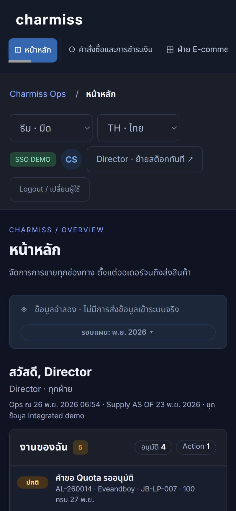

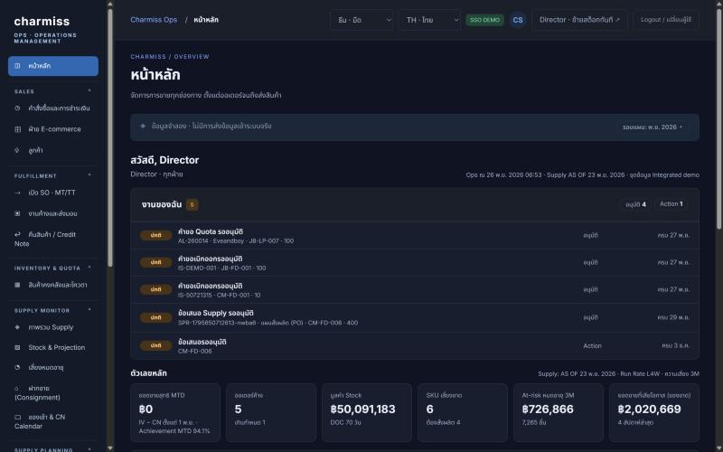

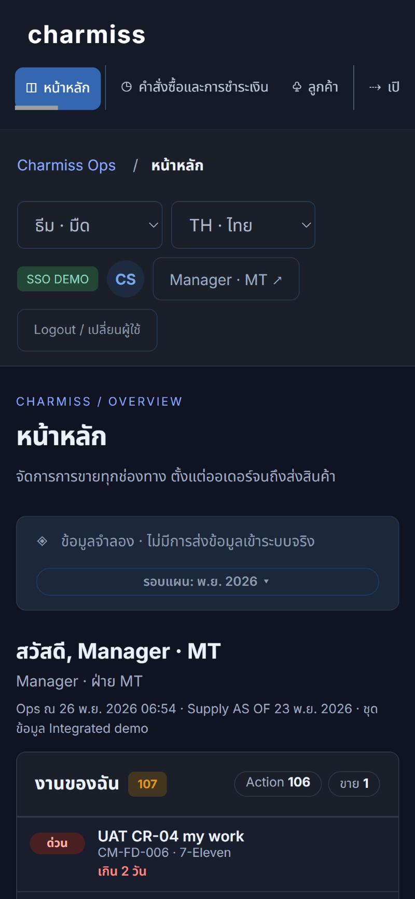

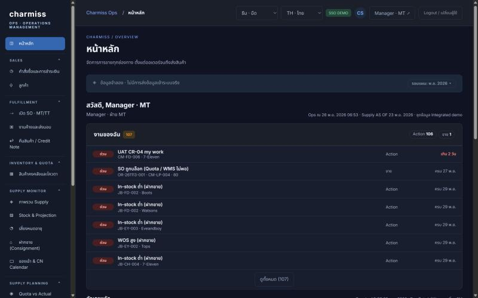

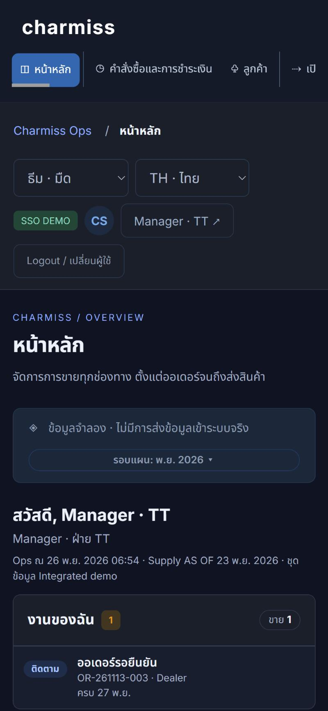

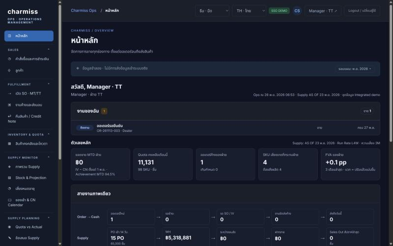

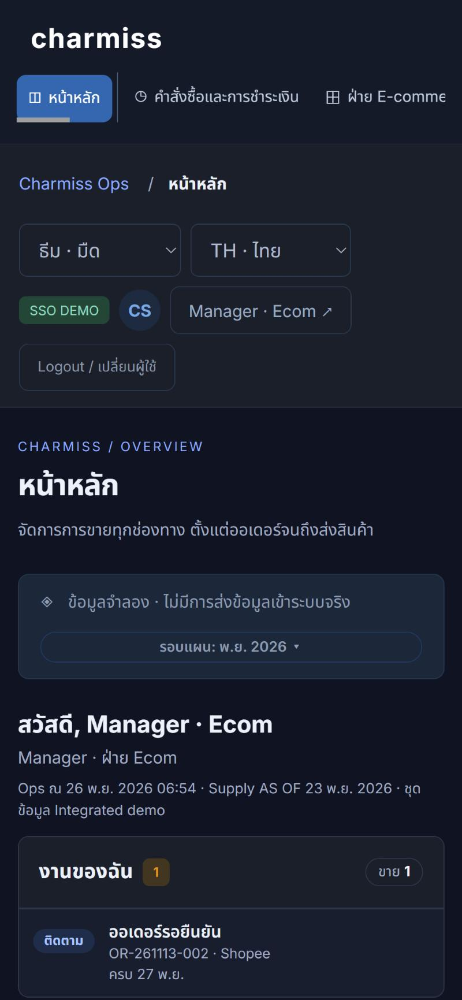

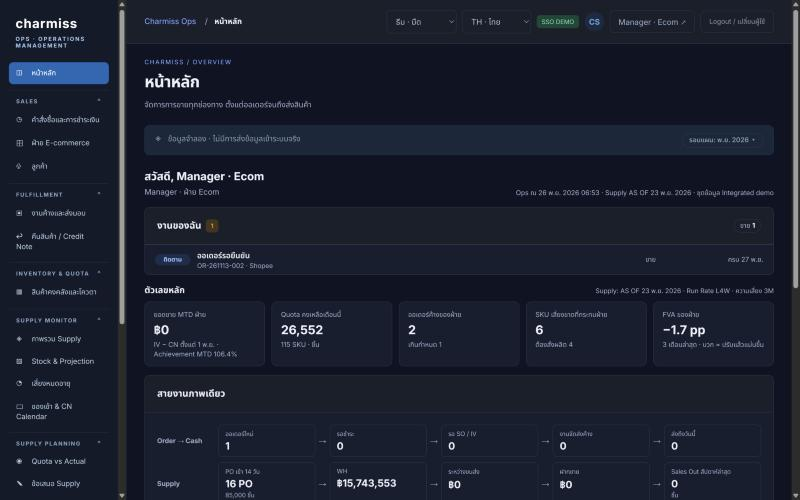

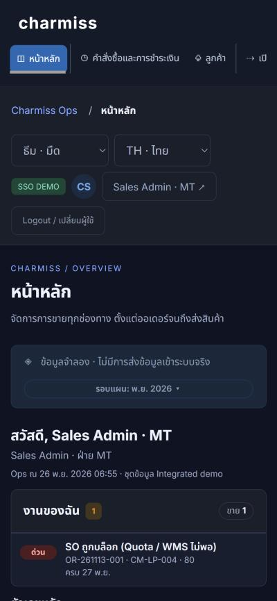

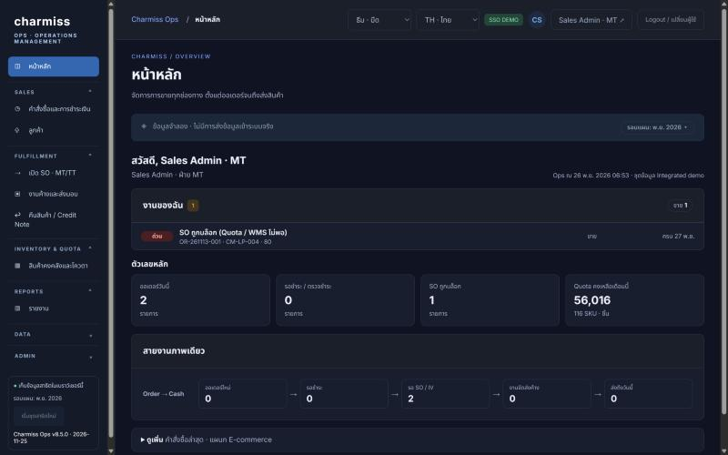

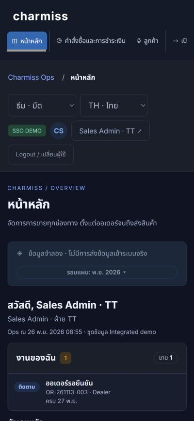

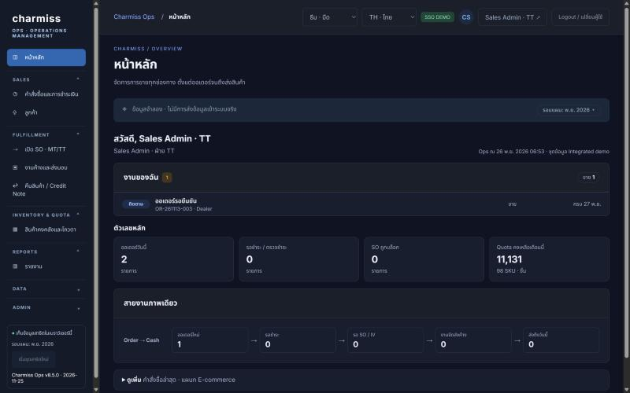

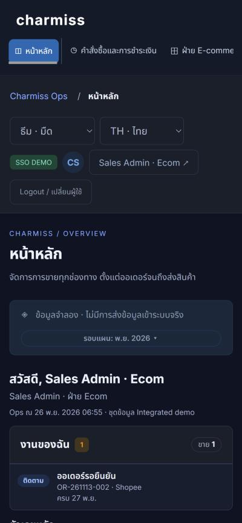

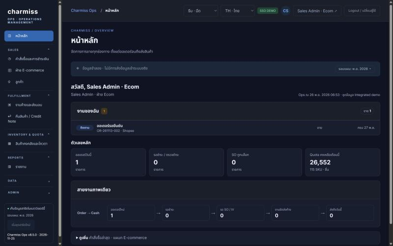

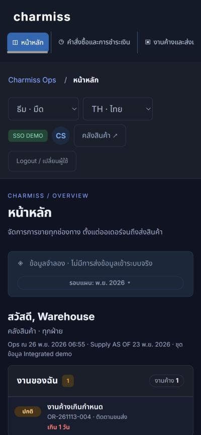

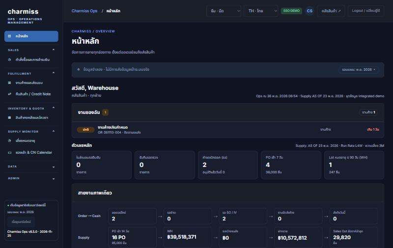

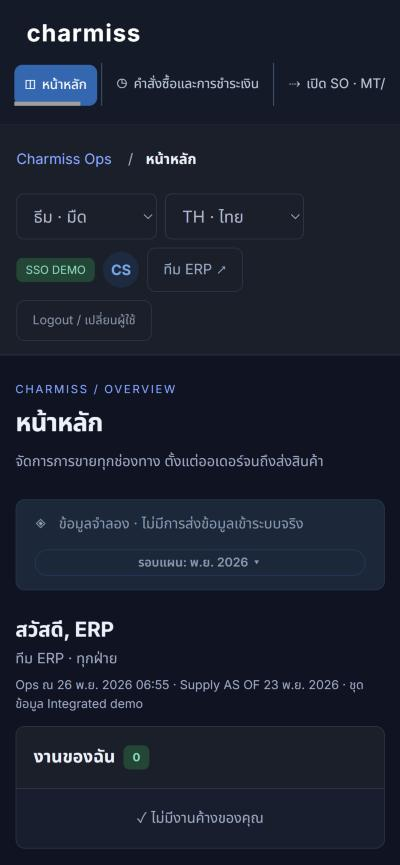

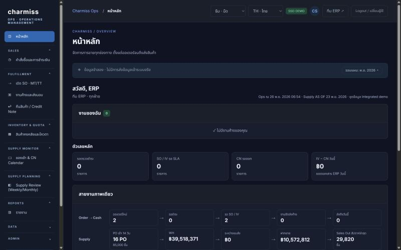

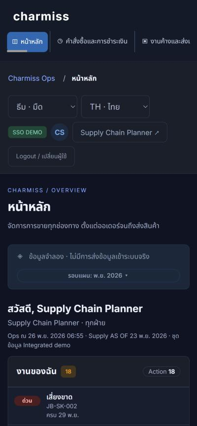

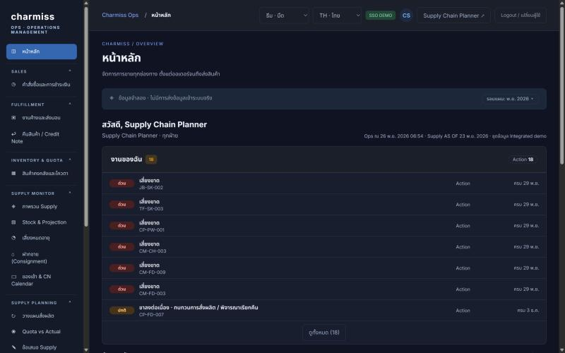

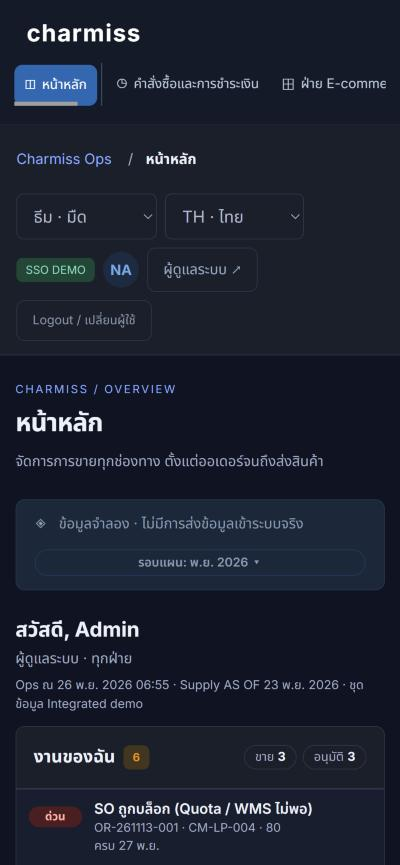

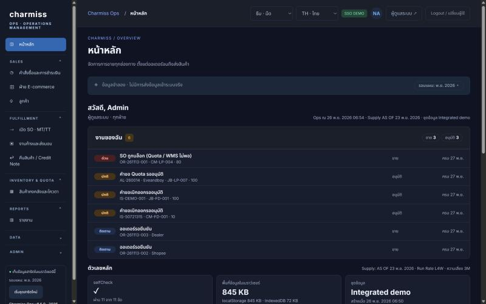
ไฟล์ในโฟลเดอร์นี้: raw-results.txt · results.json · UAT-all-cases.csv · summary.json · open-issues.csv · สร้างโดย tools/make_uat_report_cr04.py